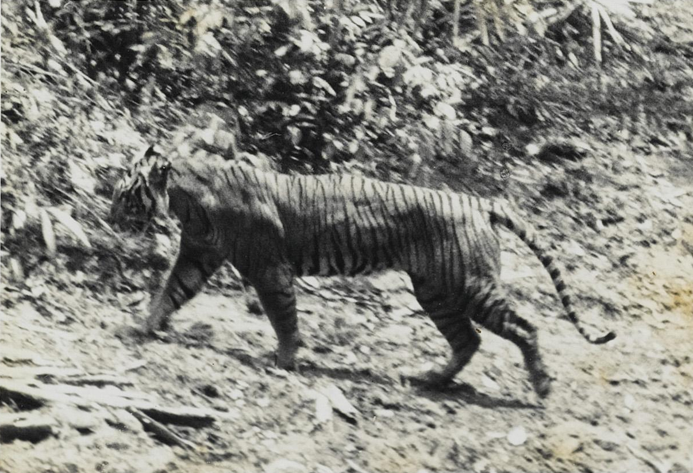
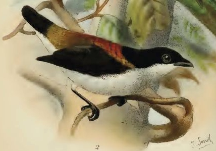
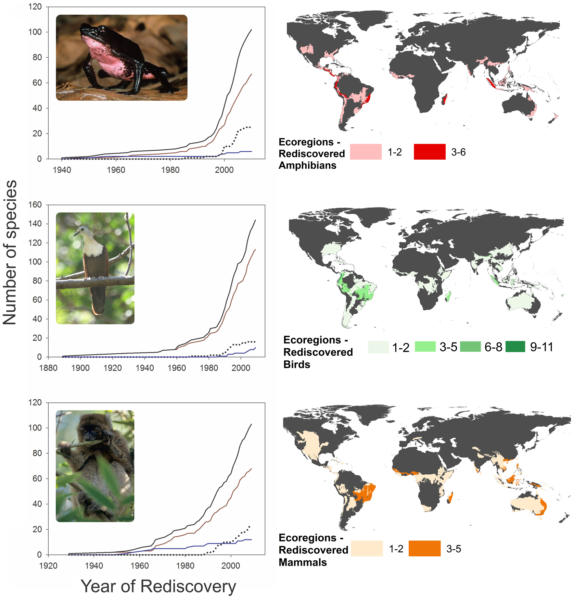

Pada tanggal 21 Maret 2024, sebuah penelitian oleh (Wirdateti et al., 2024) yang diterbitkan di jurnal Oryx menarik perhatian kembali terhadap kemungkinan keberadaan harimau Jawa, yang sebelumnya dinyatakan punah sejak tahun 2003 oleh IUCN. Studi tersebut menganalisis DNA dari sampel rambut dari terduga harimau yang ditemukan di Cipendeuy, Jawa Barat pada tahun 2019, dan menunjukkan kemiripan genetik dengan spesimen museum harimau Jawa, yang memicu spekulasi tentang kemungkinan keberadaan mereka di alam liar.
Namun, penemuan tersebut kontroversial, salah satunya karena lokasi sampel berada di area yang telah banyak terpengaruh oleh aktivitas manusia, yang mempersulit kesintasan harimau di habitat tersebut. Sebagai pengingat, penemuan terakhir harimau jawa yang terkonfirmasi adalah pada tahun 1976 di Taman Nasional Meru Betiri (Seidensticker & Syuono, 1980).
Tak lama setelahnya, Sui et al. (2024) menyanggah hasil tersebut. Sui menyatakan bahwa urutan sekuen yang dianalisis kemungkinan bukan dari Cytoplasmic DNA mitokondria harimau tetapi dari salinan nuklir (nuclear copies), yang menimbulkan keraguan tentang keandalannya, serta menunjukkan bahwa data genetik yang digunakan mungkin telah terkontaminasi dan tidak membuktikan secara konklusif keberadaan harimau Jawa.
Dalam kasus ini sebenernya konsensus dari banyak praktisi konservasi masih menganggap harimau jawa punah sampai ada bukti ilmiah yang membuktikan sebaliknya. Namun, apakah mungkin untuk menemukan kembali spesies yang telah dinyatakan punah?
Suatu spesies disebut punah ketika tidak ada lagi individu hidupnya di manapun di dunia ini. IUCN mendefenisikan kepunahan sebagai ‘there is no reasonable doubt that the last individual has died’, yang berarti ada standar yang sangat tinggi untuk menentukan apakah suatu spesies dinyatakan telah punah, sehingga tidak memunculkan kesimpulan yang prematur. Kerangka kerja yang diterbitkan pada tahun 2017 oleh (Akçakaya et al., 2017) dan diadopsi ke dalam pedoman IUCN pada tahun 2019 ini menentukan status kepunahan spesies dengan menggabungkan dua pendekatan untuk mengestimasi probabilitas kepunahan.
Pendekatan pertama menggunakan survei menyeluruh yang dilakukan di seluruh kisaran historis spesies selama waktu dan musim di mana spesies tersebut diharapkan ada. Semakin banyak survei yang dilakukan dan semakin luas area yang dicari, semakin tinggi kepercayaan dalam penilaian tersebut. Pendekatan kedua mengestimasi probabilitas kepunahan berdasarkan tingkat dan keparahan ancaman yang dihadapi spesies. Misalnya, semakin banyak kehilangan habitat yang terjadi di perkiraan area yang dihuni suatu spesies, semakin besar kemungkinan bahwa spesies tersebut tidak lagi ada.
Kerumitan dalam menyatakan spesies sebagai punah merupakan bentuk kehati-hatian dari para peneliti untuk melindungi spesies lain yang terpengaruh. Sering kali, ketika spesies dinyatakan punah, perhatian atau perlindungan terhadap habitat mereka berhenti. Sebagai contoh, kisah tentang burung berkicau Cebu (Dicaeum quadricolor) di Pulau Cebu, Filipina, yang diperkirakan punah sekitar tahun 1906, mengilustrasikan hal ini.

Para ornitolog pada awal hingga pertengahan abad ke-20 tidak menemukan jejaknya dan menyimpulkan bahwa deforestasi telah mengurangi habitat yang tersedia untuk kelangsungan hidupnya. Kesimpulan prematur ini mengakibatkan tidak adanya perlindungan serius terhadap habitat di kawasan tersebut, sehingga penebangan terus merusak hutan yang tersisa. Pada 1990-an, ketika burung tersebut ditemukan kembali, habitatnya hanya tersisa sekitar 0,03% dari luas awal hutan. Meskipun burung tersebut telah ditemukan kembali, penilaian populasi pada tahun 2021 hanya menunjukkan sekitar 60 hingga 70 individu dan terus mengalami penurunan (BirdLife International, 2020).

Pada faktanya, penemuan kembali spesies yang dianggap punah bukanlah hal yang mustahil, kajian yang dilakukan oleh Scheffers et al. (2011) bahkan menemukan lebih dari 300 spesies yang sebelumnya dianggap punah sejak rata-rata 60 tahun hingga 300 tahun sebelumnya, ditemukan kembali. Banyaknya spesies yang ditemukan kembali bahkan menunculkan istilah baru yaitu “Lazarus species”, organisme yang ditemukan masih hidup setelah dianggap punah selama bertahun-tahun. Kajian tersebut menyoroti beberapa faktor yang berkontribusi pada penemuan kembali spesies yang sebelumnya dianggap punah. Faktor-faktor ini meliputi upaya survei dan konservasi yang meningkat, teknologi survei yang lebih baik, dan peningkatan fokus pada habitat di mana spesies ini kemungkinan besar ada.
Bagi praktisi konservasi, keberadaan spesies Lazarus seringkali merupakan dilema. Mempublikasikan temuan spesies ini dapat memicu dukungan publik untuk melindungi mereka, tetapi bisa juga memancing para pemburu liar. Oleh karena itu, terkadang langkah yang tepat adalah menyembunyikan penemuan tersebut dari publik sementara waktu, hingga sumber daya dan rencana konservasi yang memadai tersedia. Setelah persiapan tersebut matang, barulah melakukan publikasi lebih luas untuk mendapatkan dukungan konservasi yang lebih besar.